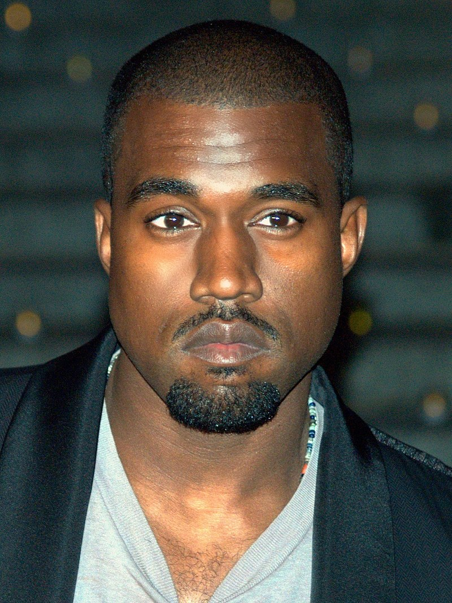

Kanye West is an American Hip-Hop artist who was born in Atlanta, GA on June 8, 1977. After the divorce of his parents when he was three years old, Kanye moved with his mother Donda to Chicago, Illinois. Kanye at a young age had a passion for music and attended American Academy of Art College and Chicago State University, where his mother was a proffesor. Kanye soon realized the College was getting in the way of his musical career and dropped out at the age of 20. Kanye's career started in the mid 90's when he began producing beats while working with Roc-A-Fella recods, a recod label founded by Jay-Z. Kanye's debut album "College Dropout" was released on February 10, 2004 and since then has sold over 4 million copies worldwide. Kanye is still writing and producing music as he recently dropped an album "Donda" on August 29, 2021. The album was named after his mother who had passed away.
Kanye West was married to Kim Kardashian for 7 years and have 4 kids. They have 2 daughters, North and Chicago, and 2 sons, Saint and Psalm. Kanye and Kim recently got divorced ending their marriage but sharing custody of the kids.
"Would you believe in what you believe in if you were the only one who believed it?" - Kanye West
| Album | Release Date | Copies Sold | Track List | Album Cover |
|---|---|---|---|---|
| The College Dropout | 2004 | 4,000,000 | TCD | |
| Late Registration | 2005 | 3,100,000 | LR | |
| Graduation | 2007 | 5,000,000 | G | |
| 808s & Heartbreak | 2008 | 1,700,000 | 808H | |
| My Beautiful Dark Twisted Fantasy | 2010 | 1,351,000 | MBDTF | |
| Watch the Throne | 2011 | 2,000,000 | WTT | |
| Yeezus | 2013 | 750,000 | Y | |
| The Life of Pablo | 2016 | 2,000,000 | TLOP | |
| Ye | 2018 | 208,000 | YE | |
| Kids See Ghosts | 2018 | 142,000 | KSG | |
| Jesus is King | 2019 | 109,000 | JIS | |
| Donda | 2021 | 37,000 | D |
Email: KanyeSuperFan@gmail.com
Phone: 123-456-7890